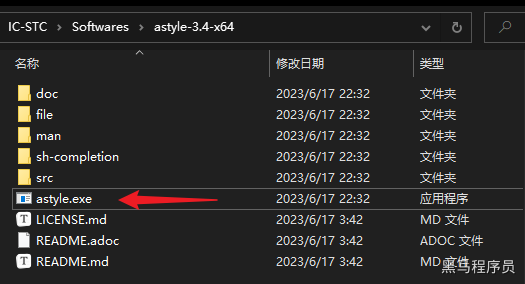
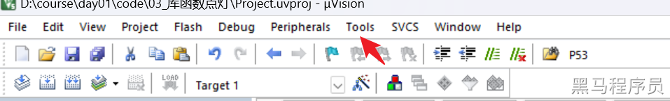
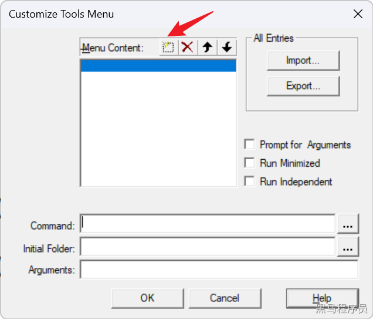
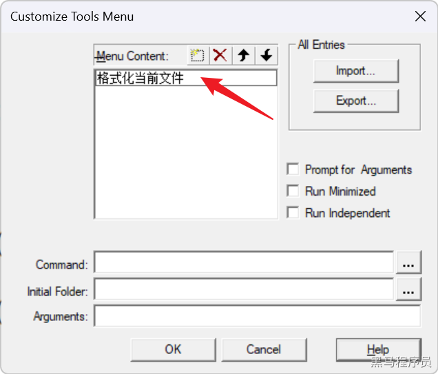
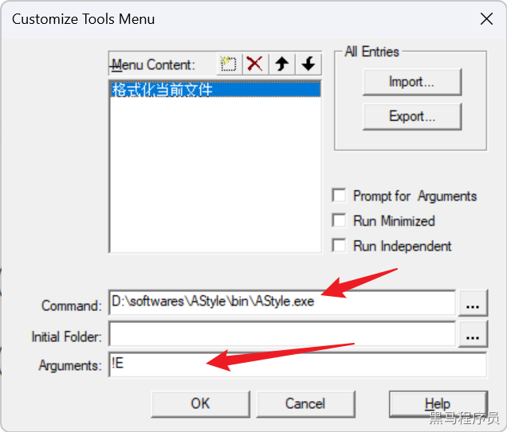
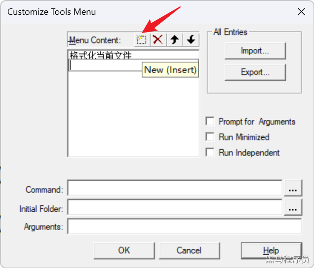
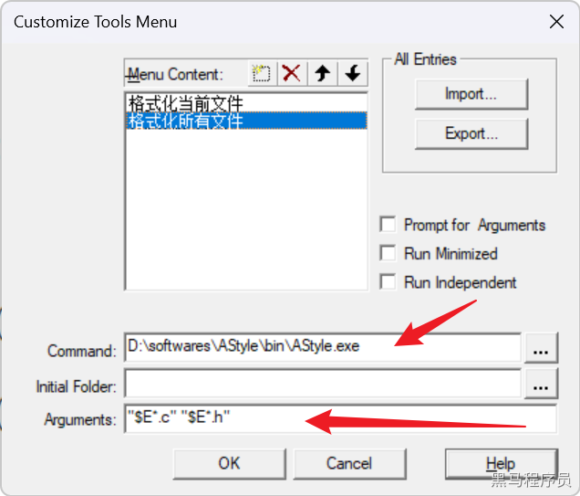
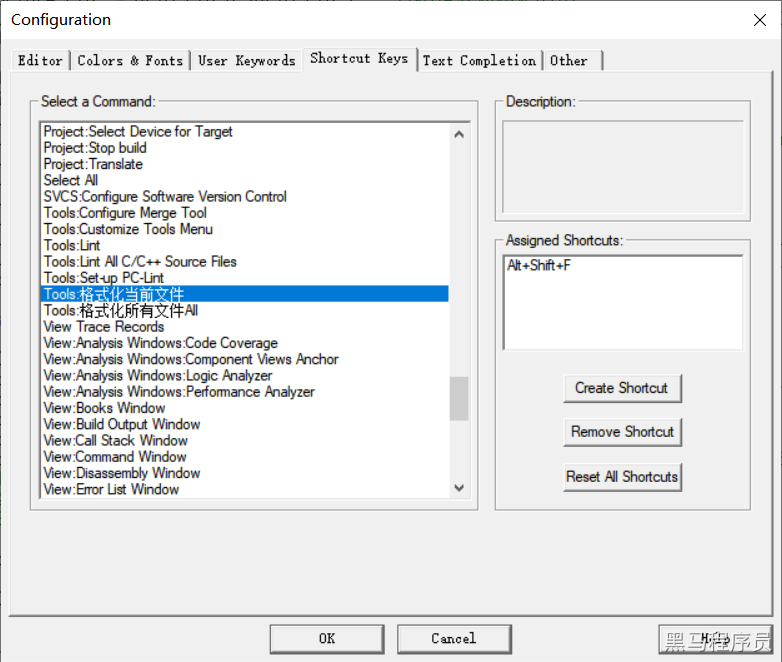

<!DOCTYPE lake>
<p data-lake-id="ud07c83fb" id="ud07c83fb"><br/></p><p data-lake-id="u8be17cba" id="u8be17cba"><span data-lake-id="uc0fdc0ce" id="uc0fdc0ce">AStyle（Artistic Style）是一个开源的代码自动格式化工具，可以用于自动化代码风格的修改。它支持多种编程语言，包括C、C++、C#、Objective-C、Java、Objective-C++、Pike和汇编语言等。AStyle可以在命令行中使用，也可以通过与许多IDE和文本编辑器集成来使用。</span></p><p data-lake-id="u5f8f554a" id="u5f8f554a"><span data-lake-id="uc62a5ffa" id="uc62a5ffa">使用AStyle可以遵循特定的代码风格规范，并且可以提高代码的可读性和可维护性。AStyle支持多种自定义选项，可以根据需要进行定制。例如，可以调整缩进、括号位置、代码块风格、空格使用等等。</span></p><p data-lake-id="u19e76788" id="u19e76788"><span data-lake-id="u517250c9" id="u517250c9">总之，AStyle是一款方便易用的代码自动格式化工具，适用于许多不同的编程语言和开发环境。</span></p><a class="yuque-card-link" href="https://www.yuque.com/attachments/yuque/0/2023/zip/27903758/1688628753886-27ce56ed-33a9-4b6c-929d-1962f47634c2.zip">localdoc：astyle-3.4-x64.zip</a><h2 data-lake-id="Jqa4B" id="Jqa4B"><span data-lake-id="ud77f1d1f" id="ud77f1d1f">keil配置</span></h2><ol list="uffb2bf9b"><li data-lake-id="u929f7f91" fid="u1524189e" id="u929f7f91"><span data-lake-id="u7f938ec2" id="u7f938ec2">解压 </span><code data-lake-id="u24f3aa29" id="u24f3aa29"><span data-lake-id="u6d72e175" id="u6d72e175">AStyle</span></code><span data-lake-id="u7c12122b" id="u7c12122b"> 压缩包，放到指定位置。</span></li></ol><p data-lake-id="u3b5dfa8d" id="u3b5dfa8d" style="padding-left: 2em"></p><ol list="uffb2bf9b" start="2"><li data-lake-id="u7554b27f" fid="u1524189e" id="u7554b27f"><span data-lake-id="u04da4ea0" id="u04da4ea0">在</span><code data-lake-id="u54278669" id="u54278669"><span data-lake-id="uf9a47d0a" id="uf9a47d0a">Tools</span></code><span data-lake-id="u34475f55" id="u34475f55">目录下选择 </span><code data-lake-id="ue8b2b9e4" id="ue8b2b9e4"><span data-lake-id="ud841ef6e" id="ud841ef6e">Customize Tools Menu</span></code><span data-lake-id="u18b20093" id="u18b20093"> </span></li><li data-lake-id="udf148d33" fid="u1524189e" id="udf148d33"><span data-lake-id="u41624300" id="u41624300">添加格式化当前文件命令</span></li></ol><p data-lake-id="u6153aee1" id="u6153aee1" style="padding-left: 2em"></p><p data-lake-id="u50f7d10c" id="u50f7d10c" style="padding-left: 2em"></p><p data-lake-id="u850c4366" id="u850c4366" style="padding-left: 2em"></p><p data-lake-id="u13546138" id="u13546138" style="padding-left: 2em"><span data-lake-id="u4d0ff6aa" id="u4d0ff6aa">在</span><code data-lake-id="u945466e5" id="u945466e5"><span data-lake-id="ua1295d29" id="ua1295d29">Command</span></code><span data-lake-id="u950fbeb7" id="u950fbeb7">中填入 </span><code data-lake-id="ue4f992fa" id="ue4f992fa"><span data-lake-id="u7d1bd67e" id="u7d1bd67e">D:\softwares\AStyle\bin\AStyle.exe</span></code></p><p data-lake-id="uf4079142" id="uf4079142" style="padding-left: 2em"><span data-lake-id="uc8baef10" id="uc8baef10">在</span><code data-lake-id="u797fe973" id="u797fe973"><span data-lake-id="u26b65d5c" id="u26b65d5c">Arguments</span></code><span data-lake-id="u43107f56" id="u43107f56">中填入 </span><code data-lake-id="u440ed914" id="u440ed914"><span data-lake-id="u417d5650" id="u417d5650">!E</span></code></p><blockquote data-lake-id="ue93131e3" id="ue93131e3"><p data-lake-id="u5be5c727" id="u5be5c727" style="padding-left: 2em"><span data-lake-id="u56172ff8" id="u56172ff8">推荐：</span><code data-lake-id="uee348029" id="uee348029"><span data-lake-id="u99574425" id="u99574425">Arguments</span></code><span data-lake-id="u48355592" id="u48355592">可以填入</span><code data-lake-id="u71af5018" id="u71af5018"><span data-lake-id="uf8d89988" id="uf8d89988">!E -n -s4</span></code><span data-lake-id="u339c9d93" id="u339c9d93"> 这样格式化就不会生成.orig文件，缩进空格保持为4个</span></p></blockquote><ol list="u6d3b65b9" start="4"><li data-lake-id="ue10227f7" fid="u5ba0d051" id="ue10227f7"><span data-lake-id="uec107141" id="uec107141">添加格式化所有文件命令</span></li></ol><p data-lake-id="uec9f4973" id="uec9f4973" style="padding-left: 2em"></p><p data-lake-id="u4eb18281" id="u4eb18281" style="padding-left: 2em"></p><p data-lake-id="u45e75fe3" id="u45e75fe3" style="padding-left: 4em"><span data-lake-id="u1db2e46f" id="u1db2e46f">在</span><code data-lake-id="u0e67bb40" id="u0e67bb40"><span data-lake-id="u875334b8" id="u875334b8">Command</span></code><span data-lake-id="u11d30ffc" id="u11d30ffc">中填入 </span><code data-lake-id="uc45a4541" id="uc45a4541"><span data-lake-id="u8119fd31" id="u8119fd31">xxxx\astyle-3.4-x64\astyle.exe</span></code><span data-lake-id="u87631482" id="u87631482"> xxxx代表你的软件所在目录</span></p><p data-lake-id="uf86469ba" id="uf86469ba" style="padding-left: 4em"><span data-lake-id="ue324af84" id="ue324af84">在</span><code data-lake-id="u2ed8d262" id="u2ed8d262"><span data-lake-id="ue9d31fb4" id="ue9d31fb4">Arguments</span></code><span data-lake-id="u37d03e88" id="u37d03e88">中填入 </span><code data-lake-id="u9f520cbd" id="u9f520cbd"><span data-lake-id="ud9a644b0" id="ud9a644b0">"$E*.c" "$E*.h" -n</span></code></p><blockquote class="lake-alert lake-alert-info" data-lake-id="u6855af6d" id="u6855af6d"><p data-lake-id="u5fb972b3" id="u5fb972b3"><span data-lake-id="uafd51eef" id="uafd51eef">每次格式化时，为了安全，AStyle会为文件创建一个备份，</span><code data-lake-id="ub320d38a" id="ub320d38a"><span data-lake-id="u6f323b72" id="u6f323b72">.orig</span></code><span data-lake-id="uac796487" id="uac796487">结尾的原文件，如 </span><code data-lake-id="u1e314274" id="u1e314274"><span data-lake-id="u4351b865" id="u4351b865">xxx.c.orig</span></code><span data-lake-id="u9450577f" id="u9450577f"> 。</span></p><p data-lake-id="u3bf08369" id="u3bf08369"><span data-lake-id="u1d3b4242" id="u1d3b4242">如果不需要创建，可以在配置</span><code data-lake-id="ufefd353e" id="ufefd353e"><span data-lake-id="ucf6f82af" id="ucf6f82af">Arguments</span></code><span data-lake-id="u842ae192" id="u842ae192">时，末尾追加个</span><code data-lake-id="ub8bda7ac" id="ub8bda7ac"><span data-lake-id="u6892e030" id="u6892e030"> -n</span></code><span data-lake-id="u9d8dae08" id="u9d8dae08">参数。</span></p></blockquote><h2 data-lake-id="p9iZ4" id="p9iZ4"><span data-lake-id="u079129a8" id="u079129a8">快捷键配置</span></h2><p data-lake-id="u6aec35ba" id="u6aec35ba"><code data-lake-id="udef94ac3" id="udef94ac3"><span data-lake-id="u4281d175" id="u4281d175">Edit</span></code><span data-lake-id="u73b37a38" id="u73b37a38">-&gt; </span><code data-lake-id="u2664b677" id="u2664b677"><span data-lake-id="u996a8f30" id="u996a8f30">Configuration...</span></code><span data-lake-id="u4e8edd56" id="u4e8edd56"> -&gt; </span><code data-lake-id="ufd2c2325" id="ufd2c2325"><span data-lake-id="u4459696c" id="u4459696c">Shortcut Keys</span></code><span data-lake-id="u7246c119" id="u7246c119">，配置以下几个快捷键：</span></p><ul list="u23b4455f"><li data-lake-id="udb2c6146" fid="u8a8e9152" id="udb2c6146"><code data-lake-id="u50507cf5" id="u50507cf5"><span data-lake-id="uddfeeb8b" id="uddfeeb8b">Tools：格式化当前文件</span></code><span data-lake-id="uc606b4e2" id="uc606b4e2"> -&gt; </span><code data-lake-id="u812a0993" id="u812a0993"><span data-lake-id="ua1824076" id="ua1824076">Alt + Shift + F</span></code></li><li data-lake-id="ue919db31" fid="u8a8e9152" id="ue919db31"><code data-lake-id="u1c52b276" id="u1c52b276"><span data-lake-id="uc869c81b" id="uc869c81b">Edit:Advanced:Comment Selection</span></code><span data-lake-id="u87a1116c" id="u87a1116c"> -&gt; </span><code data-lake-id="uc8a4fde9" id="uc8a4fde9"><span data-lake-id="u4ace14fd" id="u4ace14fd">Ctrl + /</span></code></li><li data-lake-id="u4436e5c0" fid="u8a8e9152" id="u4436e5c0"><code data-lake-id="u8ae83eaa" id="u8ae83eaa"><span data-lake-id="uf0b4e8d6" id="uf0b4e8d6">Edit:Advanced:Uncomment Selection</span></code><span data-lake-id="u0e06c455" id="u0e06c455"> -&gt; </span><code data-lake-id="u495a425d" id="u495a425d"><span data-lake-id="ub1493f3b" id="ub1493f3b">Ctrl + Shift + /</span></code></li></ul><p data-lake-id="ub3868aea" id="ub3868aea"><br/></p><p data-lake-id="ue881d623" id="ue881d623"></p>